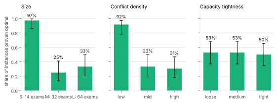
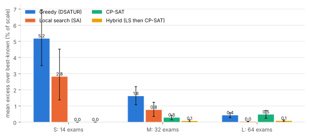
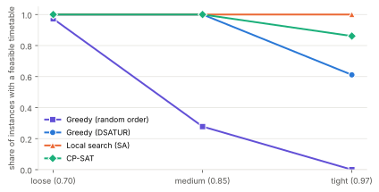
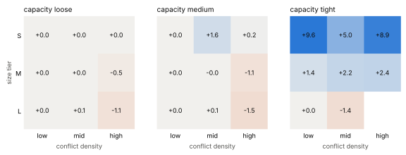

Constraint-Aware Examination Timetable Optimizer
When does exact solving pay off? A pre-registered comparison of greedy constructions, a tuned local search and OR-Tools CP-SAT on 108 held-out examination-timetabling instances, mapped against instance size, conflict density and capacity tightness.
1. Problem
A university must place every exam in one time slot so that no student sits two exams at once and no slot holds more students than the rooms allow. That already makes a graph-colouring problem with capacities: exams are vertices, an edge joins two exams that share a student. On top of it come soft goals: avoid back-to-back exams, avoid more than two exams for one student on one day, spread exams out, and use few slots.
- Hard: one slot per exam; no student clash; seats per slot <= capacity.
- Soft (summed over students): 5 per back-to-back pair, 2 and 1 per pair one or two periods apart inside a day, 8 per exam beyond two on one day.
- Research question: for which instance sizes, densities and capacity tightness does an exact solver beat cheap heuristics, and when does it not?
2. Design
Instances. Real benchmarks were not usable (the sandbox blocked their hosts and no licence is stated), so a documented generator (DATA.md) builds instances with controlled
size (14 / 32 / 64 exams), conflict density (0.10 / 0.25 / 0.45) and capacity tightness (0.70 / 0.85 / 0.97). Each instance has a hidden planted timetable so it is feasible by construction; solvers never see it.
Tuning instances (54) and held-out instances (108) come from disjoint seeds, and every tuning choice was frozen before the held-out run.
Methods. Three greedy constructions (random order, largest degree first, DSATUR-style most-constrained first); a simulated-annealing local search that never breaks a hard constraint; CP-SAT cold; and a hybrid (local search for 25% of the budget, then CP-SAT warm-started). All get the same 20 s wall clock and the same two CPU cores (SA best of two processes, CP-SAT two workers).
Original angle. Instead of asking only "is CP-SAT better?", the study pre-registers six hypotheses about where exact solving pays off, and fits a one-feature decision rule (use CP-SAT when the conflict graph has at most 505 edges) on the tuning set only, then tests it on the held-out set.
3. Implementation
generator.pycontrolled instances with a planted solution;validator.pyan independent checker that shares no code with the solvers and recomputes the objective student by student.state.pyexact incremental cost deltas shared by greedy and local search;greedy.py,localsearch.py;cpsat.pythe CP-SAT models (soft objective and slot minimisation).- 1072 stored timetables were re-validated; 0 hard violations. The validator's cost is used everywhere. In 3 cold CP-SAT runs (tier L, time limit reached) the solver's own claimed objective was higher than the validated cost (largest gap 335); this is Deviation 3 in
PROTOCOL.md, found by the audit before results were computed. - Unit tests, including tests that prove the validator can fail (clash, capacity, out-of-range, missing slot) and that two different CP-SAT encodings reach the same optimum.
4. Results (held-out instances only)
Pre-registered hypotheses
Primary metric: excess over the best cost any method found on the same instance, in percent of a fixed per-instance scale (lower is better). Intervals are 95% bootstrap over instances.
| Hypothesis | Claim | Evidence | Verdict |
|---|---|---|---|
| H1 proof frontier | Proof rate: Wilson CI above 0.5 for tier S and below 0.25 for tier L (measured: tier M and L proof rates are both below 50%, but tier L's interval reaches above 0.25) | S: 97% (35/36; 95% CI 86%-100%) | M: 25% (9/36; 95% CI 14%-41%) | L: 33% (12/36; 95% CI 20%-50%) | not supported |
| H2a crossover (tier M) | CP-SAT beats tuned local search in M (D = excess(LS) - excess(CP-SAT) > 0) | 0.48 [0.05, 0.96] | supported |
| H2b crossover (tier L) | Local search beats CP-SAT in L (D < 0) | -0.45 [-0.71, -0.22] | supported |
| H3 tightness vs greedy | Random-order greedy loses feasibility under tight capacity; LS and CP-SAT stay >= 90% feasible at tight capacity (LS met this; cold CP-SAT did not: it returned no timetable in 5 of 24 tight instances, all tier L, within 20 s) | loose 100% (24/24; 95% CI 86%-100%); tight 0% (0/24; 95% CI 0%-14%); LS tight 100%, CP-SAT tight 79% | not supported |
| H4 warm start | Hybrid beats cold CP-SAT (M+L): mean excess difference < 0 | -0.29 [-0.42, -0.18] | supported |
| H5 one-feature rule | CP-SAT if edges <= 505 else LS beats both fixed policies | rule - LS: -1.10 [-1.75, -0.56]; rule - CP-SAT: -0.13 [-0.21, -0.05] | supported |
| H6 slot minimisation | DSATUR first-fit already matches CP-SAT's slot count on >= 90% of instances | 73% (79/108; 95% CI 64%-81%) | not supported |
Where exact solving can prove optimality

Solution quality by size

| Size | Method | Feasible | Mean excess [95% CI] |
|---|---|---|---|
| S: 14 exams | Greedy (DSATUR) | 92% | 5.17 [3.50, 6.95] |
| S: 14 exams | Local search (SA) | 100% | 2.82 [1.38, 4.52] |
| S: 14 exams | CP-SAT | 100% | 0.00 [0.00, 0.00] |
| S: 14 exams | Hybrid (LS then CP-SAT) | 100% | 0.00 [0.00, 0.00] |
| M: 32 exams | Greedy (DSATUR) | 86% | 1.61 [1.07, 2.20] |
| M: 32 exams | Local search (SA) | 100% | 0.76 [0.35, 1.23] |
| M: 32 exams | CP-SAT | 100% | 0.28 [0.15, 0.43] |
| M: 32 exams | Hybrid (LS then CP-SAT) | 100% | 0.07 [0.02, 0.14] |
| L: 64 exams | Greedy (DSATUR) | 83% | 0.43 [0.28, 0.58] |
| L: 64 exams | Local search (SA) | 100% | 0.03 [0.01, 0.06] |
| L: 64 exams | CP-SAT | 86% | 0.47 [0.24, 0.72] |
| L: 64 exams | Hybrid (LS then CP-SAT) | 97% | 0.08 [0.04, 0.13] |
Capacity tightness and feasibility

Regime map: local search minus CP-SAT

All methods, all instances
| Method | Feasible | Mean excess [95% CI] | Mean pre-registered % regret [95% CI] |
|---|---|---|---|
| Greedy (random order) | 42% (45/108; 95% CI 33%-51%) | 4.97 [2.73, 7.82] | 1314.0 [583.0, 2350.9] |
| Greedy (largest degree) | 69% (75/108; 95% CI 60%-77%) | 1.78 [1.24, 2.43] | 122.5 [71.2, 191.1] |
| Greedy (DSATUR) | 87% (94/108; 95% CI 79%-92%) | 2.48 [1.77, 3.29] | 792.8 [130.5, 1745.2] |
| Local search (SA) | 100% (108/108; 95% CI 97%-100%) | 1.20 [0.67, 1.82] | 40.8 [20.2, 67.7] |
| CP-SAT | 95% (103/108; 95% CI 90%-98%) | 0.24 [0.15, 0.34] | 19.7 [11.6, 28.9] |
| Hybrid (LS then CP-SAT) | 99% (107/108; 95% CI 95%-100%) | 0.05 [0.03, 0.08] | 6.7 [2.7, 13.1] |
Per-cell table (table view of the map)
| Size | Density | Tightness | n | CP-SAT proven | DSATUR | LS | CP-SAT | Hybrid |
|---|---|---|---|---|---|---|---|---|
| S | low | loose | 4 | 4 | 2.2 | 0.0 | 0.0 | 0.0 |
| S | low | medium | 4 | 4 | 2.6 | 0.0 | 0.0 | 0.0 |
| S | low | tight | 4 | 4 | 6.2 | 9.6 | 0.0 | 0.0 |
| S | mid | loose | 4 | 4 | 2.8 | 0.0 | 0.0 | 0.0 |
| S | mid | medium | 4 | 4 | 8.3 | 1.6 | 0.0 | 0.0 |
| S | mid | tight | 4 | 4 | 6.4 | 5.0 | 0.0 | 0.0 |
| S | high | loose | 4 | 3 | 2.7 | 0.0 | 0.0 | 0.0 |
| S | high | medium | 4 | 4 | 5.6 | 0.2 | 0.0 | 0.0 |
| S | high | tight | 4 | 4 | 10.6 | 8.9 | 0.0 | 0.0 |
| M | low | loose | 4 | 4 | 0.0 | 0.0 | 0.0 | 0.0 |
| M | low | medium | 4 | 3 | 0.4 | 0.0 | 0.0 | 0.0 |
| M | low | tight | 4 | 2 | 2.5 | 1.4 | 0.0 | 0.0 |
| M | mid | loose | 4 | 0 | 0.9 | 0.0 | 0.0 | 0.0 |
| M | mid | medium | 4 | 0 | 1.0 | 0.1 | 0.1 | 0.0 |
| M | mid | tight | 4 | 0 | 3.6 | 2.4 | 0.2 | 0.0 |
| M | high | loose | 4 | 0 | 1.8 | 0.0 | 0.6 | 0.0 |
| M | high | medium | 4 | 0 | 2.7 | 0.0 | 1.1 | 0.4 |
| M | high | tight | 4 | 0 | 5.7 | 2.8 | 0.5 | 0.3 |
| L | low | loose | 4 | 4 | 0.0 | 0.0 | 0.0 | 0.0 |
| L | low | medium | 4 | 4 | 0.0 | 0.0 | 0.0 | 0.0 |
| L | low | tight | 4 | 4 | 0.6 | 0.0 | 0.0 | 0.0 |
| L | mid | loose | 4 | 0 | 0.3 | 0.1 | 0.0 | 0.0 |
| L | mid | medium | 4 | 0 | 0.2 | 0.1 | 0.0 | 0.0 |
| L | mid | tight | 4 | 0 | 0.1 | 0.0 | 1.4 | 0.2 |
| L | high | loose | 4 | 0 | 0.7 | 0.0 | 1.1 | 0.1 |
| L | high | medium | 4 | 0 | 1.0 | 0.0 | 1.5 | 0.3 |
| L | high | tight | 4 | 0 | 1.4 | 0.1 | n/a | 0.1 |
Entries are mean excess; 4 instances per cell, so cells are descriptive, never inferential.
Study A: number of slots
| Tier | n | DSATUR first-fit matches CP-SAT | CP-SAT strictly fewer slots | Multi-start DSATUR matches CP-SAT | CP-SAT at lower bound |
|---|---|---|---|---|---|
| S | 36 | 89% (32/36; 95% CI 75%-96%) | 4 | 97% (35/36; 95% CI 86%-100%) | 56% (20/36; 95% CI 40%-70%) |
| M | 36 | 72% (26/36; 95% CI 56%-84%) | 10 | 83% (30/36; 95% CI 68%-92%) | 86% (31/36; 95% CI 71%-94%) |
| L | 36 | 58% (21/36; 95% CI 42%-73%) | 15 | 75% (27/36; 95% CI 59%-86%) | 72% (26/36; 95% CI 56%-84%) |
| all | 108 | 73% (79/108; 95% CI 64%-81%) | 29 | 85% (92/108; 95% CI 77%-91%) | 71% (77/108; 95% CI 62%-79%) |
Sensitivity: the pre-registered percentage regret
The original metric divides by the best cost, which is 0 on some large low-density instances (Deviation 1 in PROTOCOL.md). It is reported unchanged here as a sensitivity check.
| Quantity | Mean difference [95% CI], in % regret |
|---|---|
| H2 D (M / L) | 46.3 [7.1, 100.0] / 1.1 [-55.0, 82.5] |
| H4 hybrid - cold | -19.8 [-34.2, -4.3] |
| H5 rule - LS / rule - CP | -32.4 [-59.8, -11.1] / -10.8 [-18.9, -3.8] |
5. Limitations
- Constructed instances only: every instance is feasible by construction, the conflict graph always has a colouring within the horizon, and exam sizes carry a faint imprint of the planted grouping. Results may not transfer to real examination data (no real benchmark could be used; see
DATA.md). - Rooms are one pooled seat count per slot, exams last one slot, and the objective weights are my own choice.
- CP-SAT's lower bound is 0 until it proves optimality on this objective, so optimality gaps are uninformative; quality is judged against the best cost found by any method, which is itself an upper bound on the optimum.
- One wall-clock budget (20 s) and two CPU cores; wall-clock limits make CP-SAT and annealing runs not bit-for-bit repeatable, which is why every timetable is stored and re-validated.
- Four instances per cell: per-cell numbers are descriptive; inference pools over the other factors.
- Python local search; a compiled implementation would run many more moves per second and could shift the crossover.
6. Next steps
- Run the same code on the real Toronto and ITC2007 instances once their terms can be checked and the files obtained (a parser is all that is missing).
- Per-room modelling, multi-slot exams and overnight spacing; a compiled local search; a second budget (60 s) to see whether the crossover moves.
- Stronger CP-SAT formulations (cliques over student groups, symmetry breaking across days) to obtain informative lower bounds.
Reproduce
pip install -r requirements.txt · pytest · python scripts/generate_instances.py eval ·
python scripts/run_experiment.py --data data/eval --out results/raw/eval.jsonl --budget 20 --ls-params results/tuned_params.json ·
python scripts/analyze.py eval --raw results/raw/eval.jsonl --data data/eval · python scripts/build_docs.py.
Frozen decisions live on the branches protocol-freeze and params-freeze (git tag pushes fail from the sandbox, so pinned branches are used).| Freeze record | Value |
|---|---|
| protocol_freeze_branch | protocol-freeze |
| protocol_freeze_commit | b45a934ec3d6393fbc2bf092524f87153b773146 |
| params_freeze_branch | params-freeze |
| params_freeze_commit | 2c45e032fda905b1d9f7f6d5ae0cc7c74e50ace6 |
| tuned_sa_params | {'t0': 2.0, 't1': 0.01, 'p_swap': 0.5} |
| decision_rule_theta_edges | 505 |
| eval_manifest_sha256 | 705a62d86c8b337f8922df9f53ca4f33924ff810b3b631fc08599fb2a570e12c |
| budget_seconds | 20 |